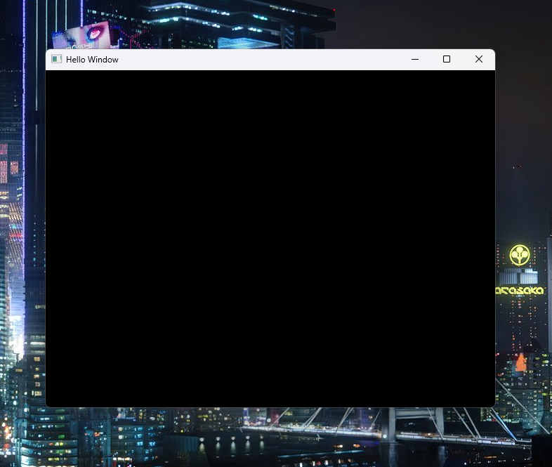

STEEL Core is my desktop application development library. SC is written in Java on top of LWJGL. SC helps rapidly develop applications in LWJGL and eliminates a great deal of boilerplate that would typically be associated with libraries like GLFW, OpenGL, and Nuklear. SC provides many utilities that make it easier to use. Full control of the system is still possible though, because at any time the programmer can go down into pure OpenGL if needed (or any library SC touches).
Below are some demo programs and their outputs:

The example above is packaged with STEEL Core. It shows that creating a window and renderer running in their own thread is not only possible, but doesn't take very much code. Technically, the code in the static block isn't necessary and without comments, you are down to nine lines of code.
In this example, we create a window with a UI element that allows you to change the color of the window. As you can see, some of the beginning is not shown, but the main logic all there. This example is also bundled with STEEL Core.
These are just toy examples and some of the most basic demos present in STEEL Core.
Sprite Studio, my biggest project yet, is also powered by STEEL Core. Sprite Studio was originally powered by STEEL Core's predecessor, but I ported it over to STEEL Core.
STEEL Core will evolve and improve over time. My hope is for it to always remain open source and up to date. As I develop more software with it, it will grow and be better and better. Being a Java library, I can't say if I'll use it for all my projects, as I may want to use another language at some point, but for now, I'm sticking with it. If you want to use STEEL Core, email me and I'll help you set it up.